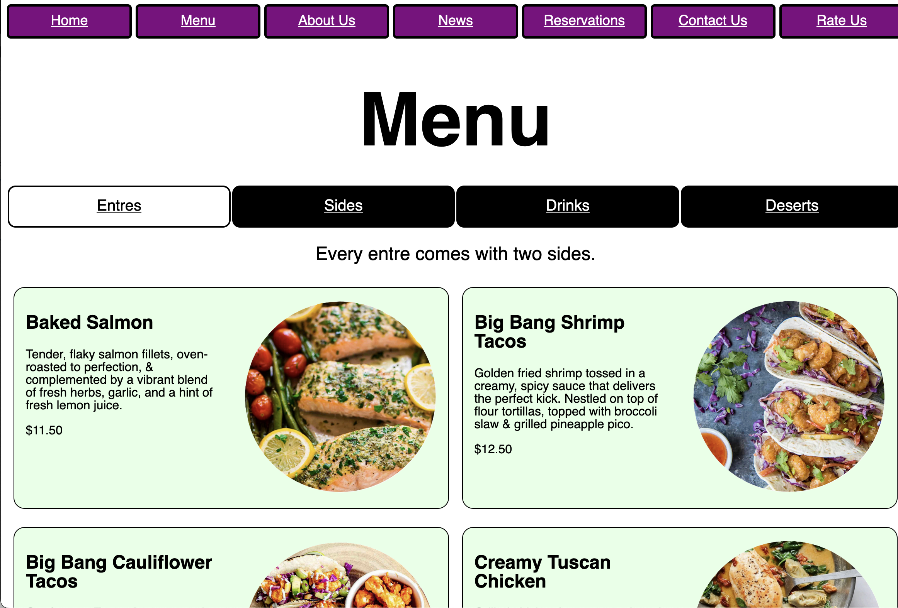
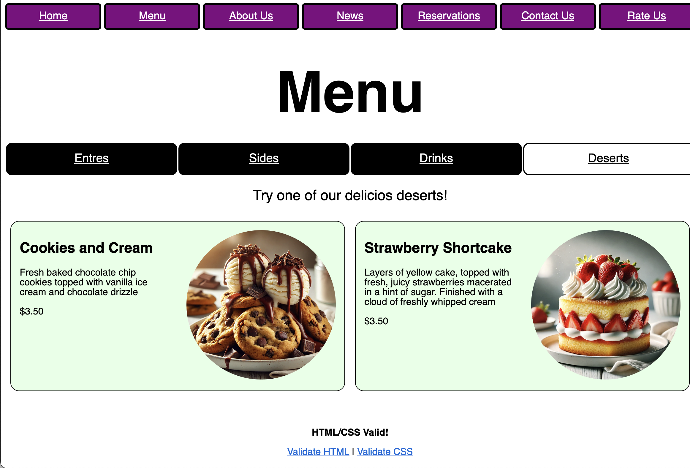
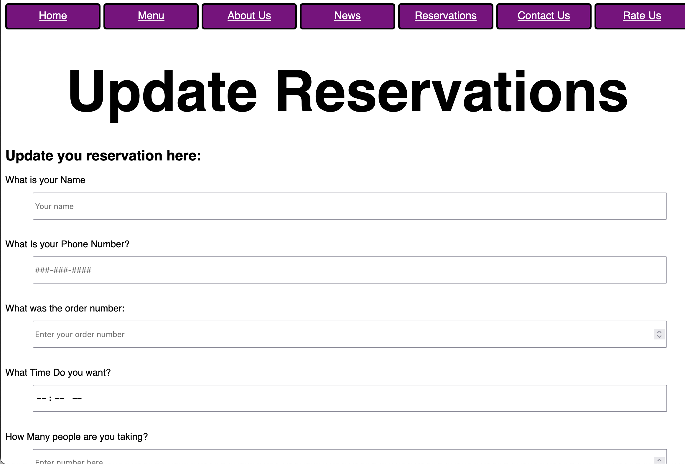

My group set up this website: Off The Pike
For the project, I made the form for updating your reservations (linked at the bottom of the reservations page) and I made the entire menu. The menu has its own navigation bar to switch bettween the 4 pages within it (entres, sides, drinks, & deserts).
 These screenshots show the menu I designed. The entres page contains images from the real menu but the other pages have temporary AI images to give the cullinary staff a good idea of what the website will look like.
This screenshot shows the update reservation page I designed. I copied some of the ideas from the reservation page owen had but I also added some styles to both, such as patterns for the phone numbers and placeholders for the text questions.
Looking back on this project, I see that we could have tried to plan out the style for the site before we started making it. Other than that, I am fairly proud of the work we did. We managed to work concurenty in github and get the project done in time.